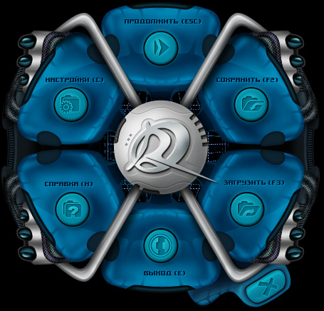

Руководство рейнджера > Панель
навигации > Системное меню (Esc)
|
Руководство рейнджера > Панель
навигации > Системное меню (Esc)
|
| Системное меню (Esc) Системное меню состоит из шести кнопок (в скобках указаны соответствующие этим кнопкам "горячие" клавиши) |

| Продолжить (Esc) - закрыть системное меню и вернуться
в игру. Сохранить (F2) - записать текущую игру. Загрузить (F3) - загрузить ранее сохраненную игру. Настройки (С) - изменить настройки игры. Справка (H) - вызов этой справки. Выход (E) - завершить текущую игру и перейти на экран главного меню. И дополнительная кнопка - закрытие окна "Отмена" в виде крестика в правом нижнем углу. |